Você respondeu a rodada 3 e pediu ajuste em catorze mudanças. Cada uma está aqui com as suas palavras, o que mudou, a foto de antes (como você viu) e a de depois, com a parte nova contornada de rosa. Aprove ou diga o que falta.
Já aprovadas por você, sem cartão: 02-16, 06-27, 07-32, 08-13, 10-20, mapa do controle 19, mapa do controle 20, mapa do controle 21. Na 07-34 você escolheu a leitura A; o cartão dela mostra como ela ficou.
O que você pediu e o que mudou
| Mudança | O que mudou |
|---|---|
| 03-15 | A linha «Força do gatilho» virou um seletor por controle, do mesmo tamanho dos de cima, com «Pelo estilo do jogo» como primeira escolha e o padrão; Forte, Média, Fraca e Desligada ficam como escolha fixa. |
| 04-11 | Saíram o botão «Desligar» e a chave «Sem piscar» do topo. |
| 05-12 | Ficou a leitura A: os quatro passos e, embaixo, o trilho fino até 100%; a leitura B saiu da página. |
| 06-26 | Ficou a leitura A (título «Navegação»), e o «i» saiu. |
| 07-29 | As três Lovense viraram UMA extensão, «Lovense», com as três formas dentro (Pelo Intiface, Pelo celular, DualSense como brinquedo), cada uma com a sua chave. |
| 07-30 | «Lovense pelo celular» virou a forma «Pelo celular» dentro da extensão Lovense, com chave e engrenagem próprias, na mesma grade e com a chave do mesmo tamanho das outras. |
| 07-31 | «DualSense como brinquedo» virou a terceira forma da extensão Lovense, nasce desligada, com a chave do mesmo tamanho das outras e sem aviso de estado. |
| 07-33 | Saíram «Detectar o jogo aberto» e «Procurar de novo» e a contagem com o ✓ verde ao lado do título «Lançadores». |
| 07-34 | A aba é a Experimental. |
| 07-35 | A lista das extensões cabe sem rolar nos três tamanhos, com até seis linhas: a frase de cada forma vira só a dica quando a janela é baixa (menos de 780 px). |
| 07-36 | No diálogo dos impedimentos, os dois botões de conserto têm a mesma largura (176 px) e os dois de baixo também (Fechar e Resolver os dois, 334 px). |
| 07-37 | A engrenagem de configurações fica ao lado da chave em todas as linhas (30 px de largura, a mesma em Kyty, Pelo Intiface, Pelo celular e DualSense como brinquedo), sem texto e sem aviso verde. |
| 08-14 | Na linha do Acionador USB, «Usar como botões de…» e o «Trazer de volta» da linha de baixo ficaram com o mesmo tamanho (150 x 24 px) e na mesma coluna; o botão tinha 22 px de altura. |
| 10-19 | Recusada em 14/10/2026: o segundo controle saiu da página (o campo do Editar e as regras dele). |
03-15 · Nova linha «Força do gatilho», um seletor por controle com os quatro passos do firmware: Forte, Média, Fraca e Desligada, como no PS5
A-INTENSIDADE-DA-VIBRACAO-E-DO-GATILHO-SAI-DO-FIRMWARE-COMO-NO-PS5-01«eu vi agora isso deveria ser decido pelo estilo de jogo também não?»
O que mudou. A linha «Força do gatilho» virou um seletor por controle, do mesmo tamanho dos de cima, com «Pelo estilo do jogo» como primeira escolha e o padrão; Forte, Média, Fraca e Desligada ficam como escolha fixa. Saíram os quatro botões lado a lado.
Antes
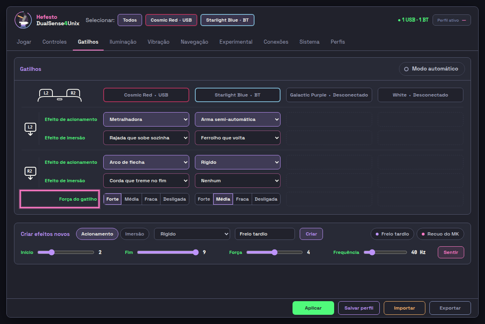
Depois

04-11 · O «Sem piscar» deixa de ser ajuste global: entra na lista de efeitos de cada controle, ao lado de «Sem efeito»; luz que nunca troca mais de três vezes por segundo, o piscar vira transição lenta
A-LUZ-DO-CONTROLE-NAO-PISCA-PARA-QUEM-E-SENSIVEL-A-LUZ-01«Tira o desligar ali dos efeitos. tira o botão de sem piscar. eke ebtra en efeitos, assim como o sem efeito (pra representar o desligar). E sem controle conectado ele tem que aparecer o vazio deixar o nome do controle ali fica muito estranho. Fora que realmente pensando agoraas duas linhas dava pra virar uma só. esses 3 averdes. 2 rosas. sei lá. não tá legal e deixa o layout muito sufocado. melhora o respiro.»
O que mudou. Saíram o botão «Desligar» e a chave «Sem piscar» do topo. A lista de efeitos de cada controle ganhou «Sem efeito» (apaga a barra) e «Sem piscar» (só transição lenta), e o seletor ocupa a largura inteira da linha. A vaga sem controle mostra o campo vazio, sem o nome. As duas fileiras de doze cores viraram uma de oito (saíram o verde-limão, o menta, o magenta e o branco: ficam um verde e um rosa). A linha Cor encolheu e o passo entre as linhas subiu de 10 para 14 px.
Antes
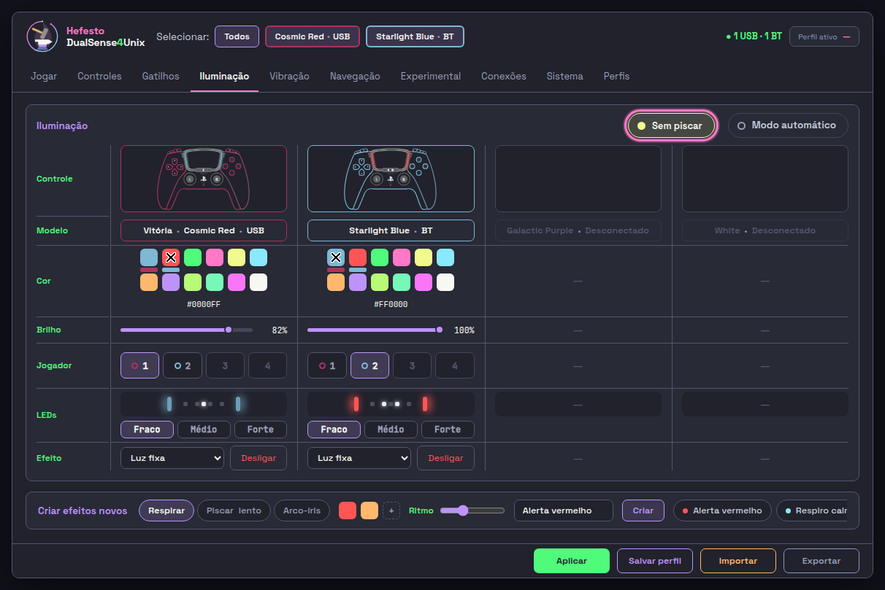
Depois
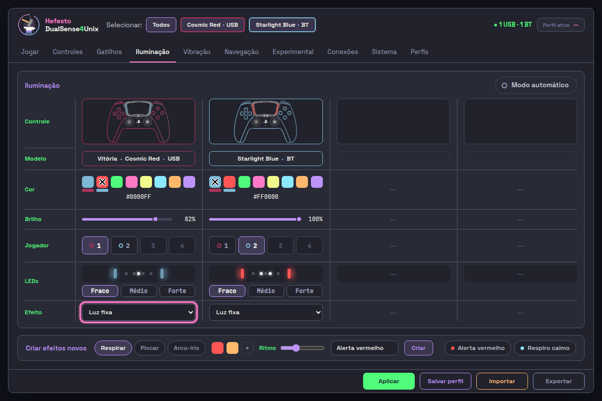
05-12 · A força da vibração vira os quatro passos do firmware, por controle: Forte, Média, Fraca e Desligada, como no PS5. O Máximo de 150% e os três botões Economia, Padrão e Máximo saem
A-INTENSIDADE-DA-VIBRACAO-E-DO-GATILHO-SAI-DO-FIRMWARE-COMO-NO-PS5-01«(sem voto) fica o antes ali no a e remove a seção inferior do criar efeitos novos também. nome dos players 3 e 4 mesma coisa.»
O que mudou. Ficou a leitura A: os quatro passos e, embaixo, o trilho fino até 100%; a leitura B saiu da página. A seção «Criar efeitos novos» saiu do pé da aba. As vagas 3 e 4 mostram o campo do nome vazio, sem «Galactic Purple» e «White». Os quatro passos ganharam a mesma largura (duas fileiras de dois, porque «Desligada» não cabe numa fileira de quatro iguais) e a linha da força cresceu para respirar.
Antes
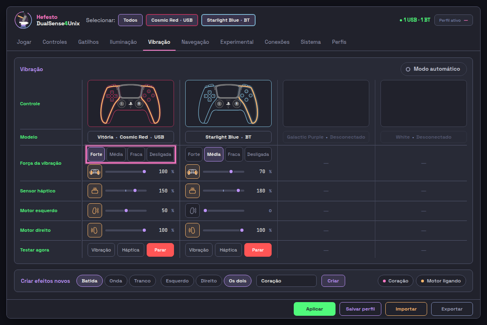
Depois

06-26 · A explicação da aba aparece quando o mouse fica parado sobre o quadro (e no foco do teclado), sem botão «i»
A-ABA-NAVEGACAO-DO-TODO-01«a mas remove o i, deixe que ele apareça se eu deixar o mouse sob a área.»
O que mudou. Ficou a leitura A (título «Navegação»), e o «i» saiu. A explicação aparece na faixa do título, ao lado de «Navegação», quando o mouse fica parado meio segundo sobre o quadro e também no foco do teclado; some quando o mouse sai. Não cobre nenhum campo. A leitura B saiu da página.
Antes
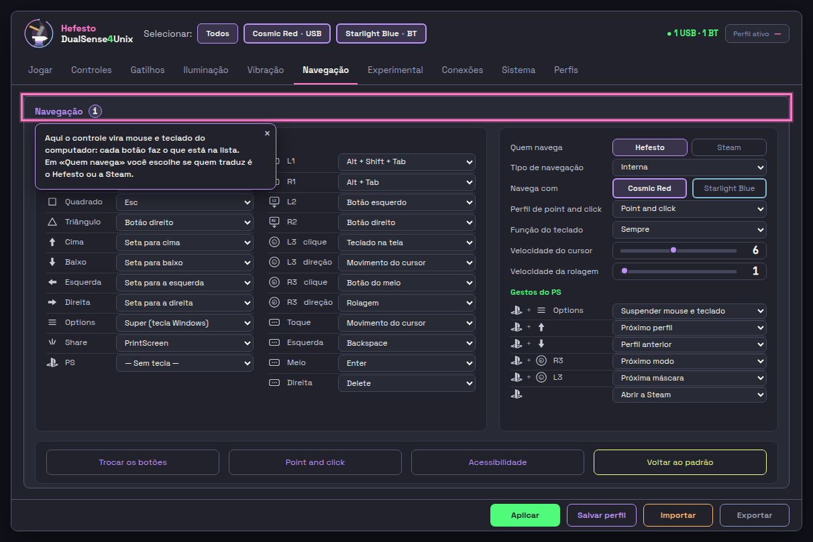
Depois

07-29 · As três Lovense viram uma extensão só, «Lovense», com as três formas dentro e uma chave para cada; sem selo verde nem «ok», só os três botões
A-ABA-EXPERIMENTAL-DO-TODO-01«Não. O botão desligar tem diferença de largura com o botão ligado. Esses 3 features do lovense são uma extensão só. e a ŕea tem que ser melhorna largura o botão e ocom numeros dentro tem um verde distoante do tema tem que ser removido. os alinhamentos não tão legais. a distribuição dos elementos da guia extensões tão muito estranhos. pouco organicos e verdadeiramente feios. esse 2 dentro do verde gritante da steam tá péssimo não deveriamos ter avisos verdes. na real não temos que ter avisos de ok ali.. só os 3 botões mesmo.»
O que mudou. As três Lovense viraram UMA extensão, «Lovense», com as três formas dentro (Pelo Intiface, Pelo celular, DualSense como brinquedo), cada uma com a sua chave. Ligada e Desligada têm a mesma largura (104 px). Saíram o selo verde com número, a coluna de «ok» (✓ Kyty, 3 acessórios, App no Game Mode, Sem apps) e o 2 verde da Steam; cada linha ficou só com os três botões: ligar, configurar e ⋮. Uma grade só para as cinco linhas, com o mesmo espaçamento.
Antes
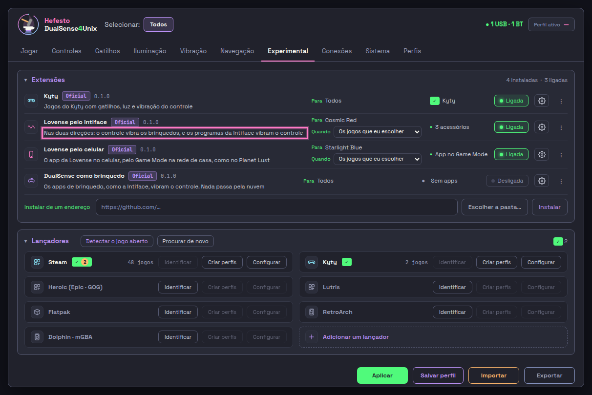
Depois
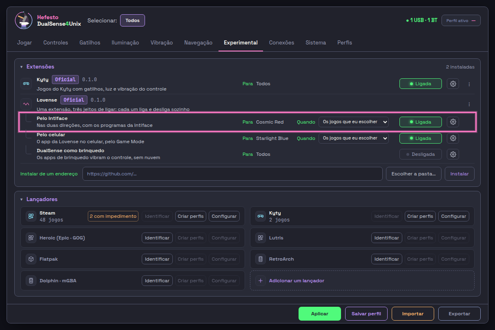
07-30 · «Pelo celular»: o app da Lovense no celular, pelo Game Mode na rede de casa, como forma dentro da extensão Lovense
A-ABA-EXPERIMENTAL-DO-TODO-01Você pediu ajuste sem texto: diga o que faltou. Apliquei o que você deu nas outras respostas: larguras iguais, nenhum aviso verde, respiro e nada sufocado.
O que mudou. «Lovense pelo celular» virou a forma «Pelo celular» dentro da extensão Lovense, com chave e engrenagem próprias, na mesma grade e com a chave do mesmo tamanho das outras.
Antes
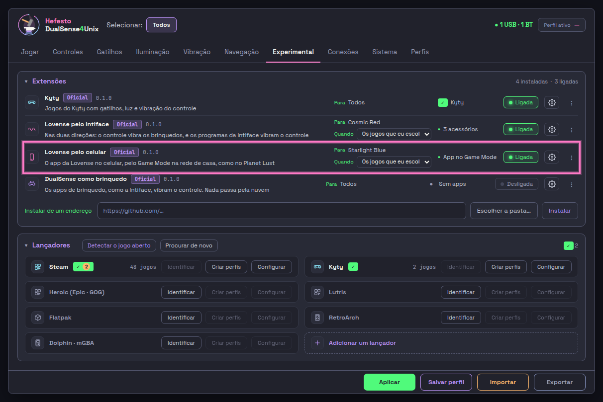
Depois

07-31 · «DualSense como brinquedo»: a terceira forma da extensão Lovense, que nasce desligada
O-HEFESTO-E-SERVIDOR-BUTTPLUG-DO-PROPRIO-DUALSENSE-01Você pediu ajuste sem texto: diga o que faltou. Apliquei o que você deu nas outras respostas: larguras iguais, nenhum aviso verde, respiro e nada sufocado.
O que mudou. «DualSense como brinquedo» virou a terceira forma da extensão Lovense, nasce desligada, com a chave do mesmo tamanho das outras e sem aviso de estado.
Antes
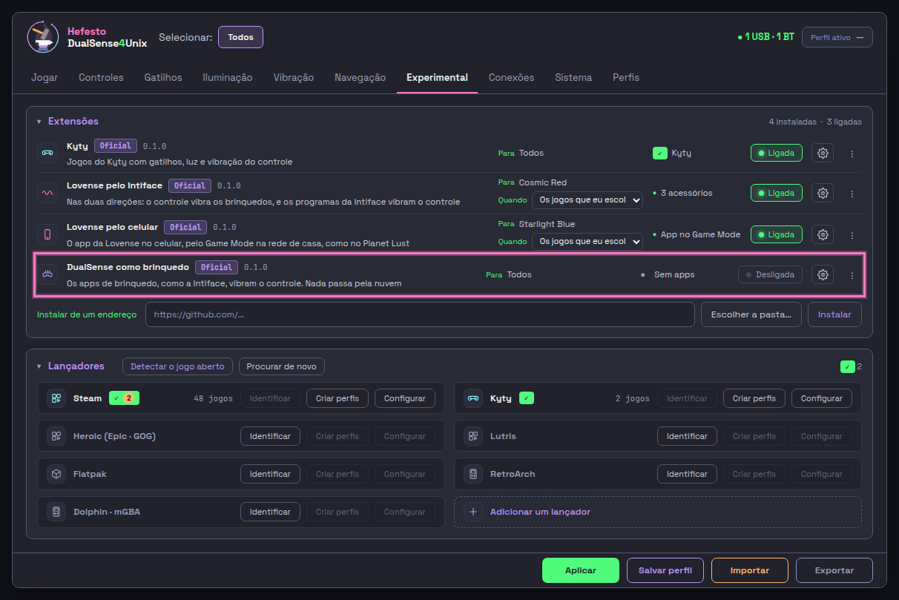
Depois

07-33 · Saem «Detectar o jogo aberto», «Procurar de novo» e a contagem verde ao lado do título «Lançadores»
A-ABA-EXPERIMENTAL-DO-TODO-01«remove os botões aí e remove o 1 e 2 e o ok do lado do lançadores.»
O que mudou. Saíram «Detectar o jogo aberto» e «Procurar de novo» e a contagem com o ✓ verde ao lado do título «Lançadores». O título ficou sozinho; a lista das extensões não rola.
Antes
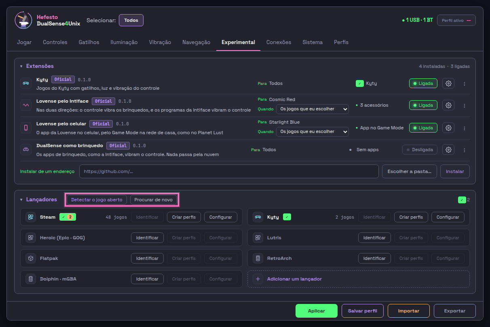
Depois

07-34 · A aba fica como o Experimental (a B foi recusada em 14/10): extensões em cima, lançadores embaixo, com os impedimentos da Steam numa linha e a engrenagem ao lado de cada chave
A-ABA-LANCADORES-GANHA-AS-MODIFICACOES-01Você escolheu a leitura A: a aba Experimental, com as extensões em cima e os lançadores embaixo.
O que mudou. A aba é a Experimental. A página do B (07-lancadores-b.html) saiu do índice e ficou no git com uma nota de recusada em 14/10. O que o B trazia e valia entrou no A: os impedimentos da Steam numa linha («2 com impedimento»), e a engrenagem ao lado da chave de cada forma e extensão.
Antes
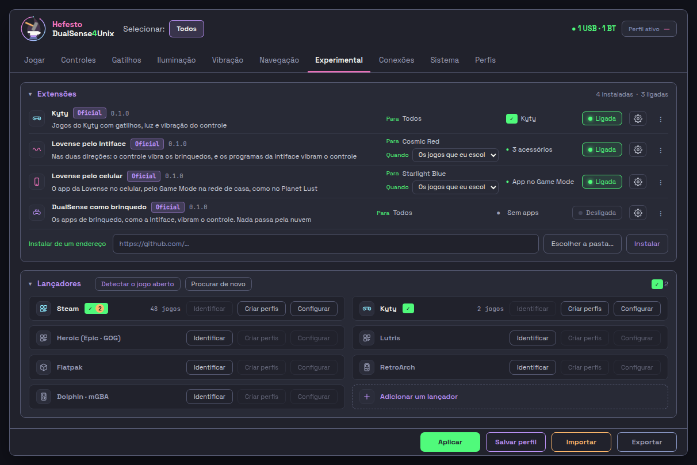
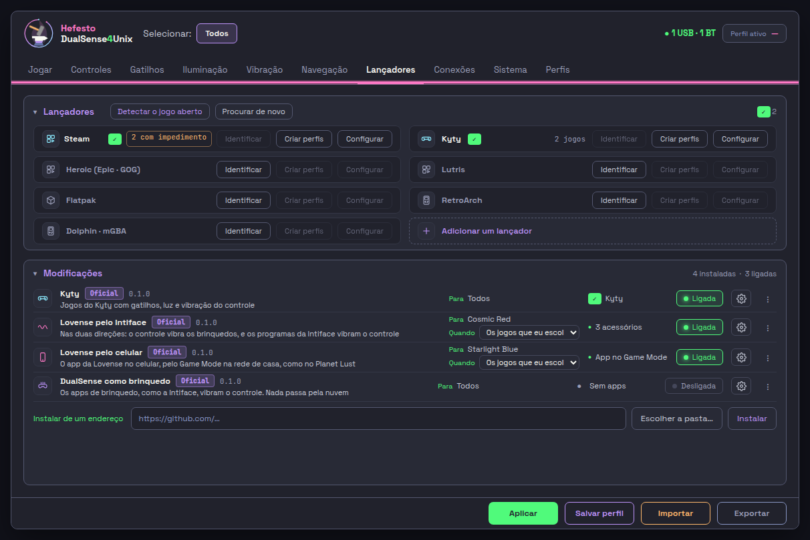
Depois
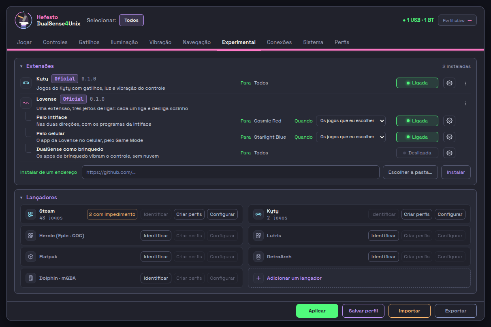
07-35 · A lista das extensões cabe sem rolar nos três tamanhos, até seis linhas (a foto põe uma linha de exemplo)
A-ABA-LANCADORES-GANHA-AS-MODIFICACOES-01Você pediu ajuste sem texto: diga o que faltou. Apliquei o que você deu nas outras respostas: larguras iguais, nenhum aviso verde, respiro e nada sufocado.
O que mudou. A lista das extensões cabe sem rolar nos três tamanhos, com até seis linhas: a frase de cada forma vira só a dica quando a janela é baixa (menos de 780 px). A foto põe uma linha de exemplo da comunidade. Em 1212x809 o espaço entre as linhas também diminui um pouco, para a sexta linha caber.
Antes
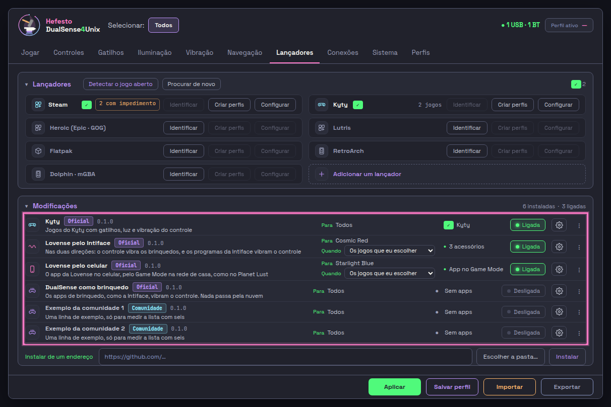
Depois

07-36 · Os impedimentos da Steam numa linha do cartão, «2 com impedimento»; o clique abre a lista, com os botões da mesma largura
A-ABA-LANCADORES-GANHA-AS-MODIFICACOES-01«padronização de largura dos bortões muito feio.»
O que mudou. No diálogo dos impedimentos, os dois botões de conserto têm a mesma largura (176 px) e os dois de baixo também (Fechar e Resolver os dois, 334 px). Na lista dos lançadores, Identificar, Criar perfis e Configurar têm 76 px em todas as linhas, e «2 com impedimento» ficou na linha da Steam com a mesma altura dos botões, sem selo verde.
Antes
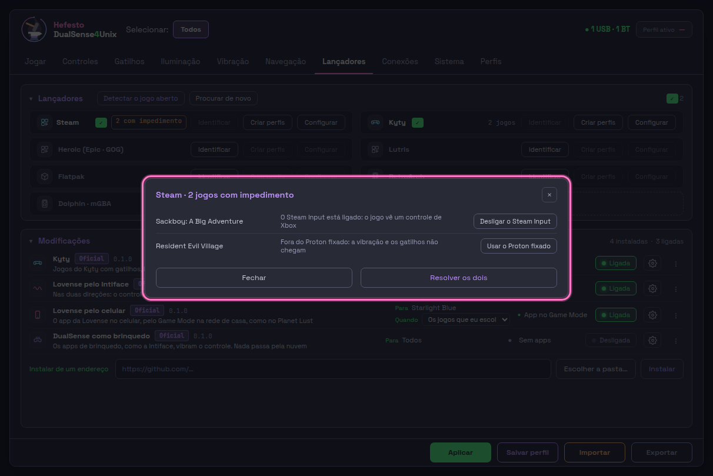
Depois
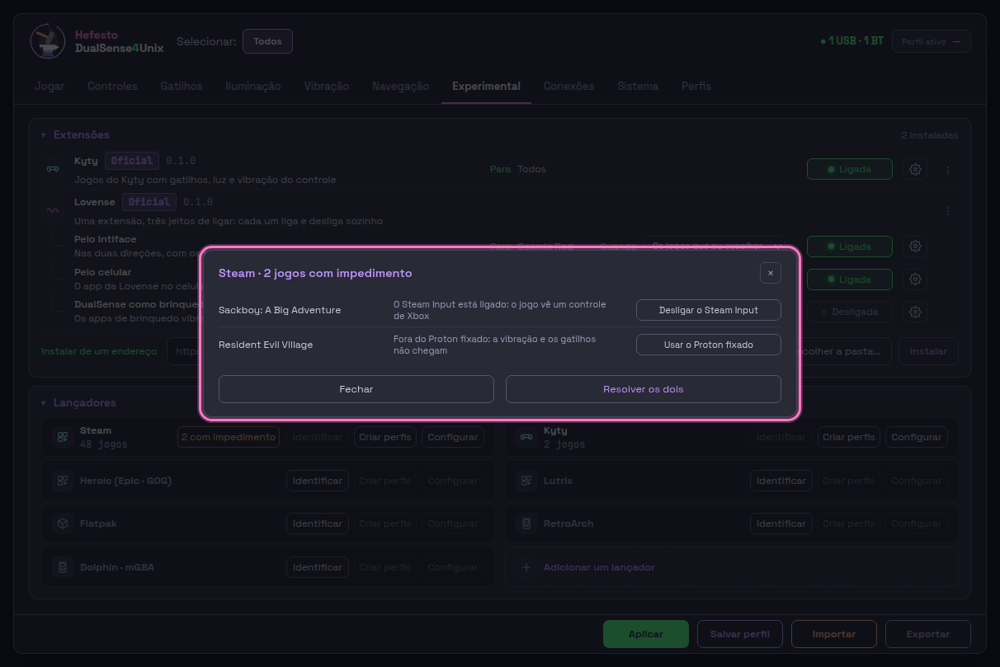
07-37 · A engrenagem de cada extensão e de cada forma fica ao lado da chave, do mesmo tamanho
A-ABA-LANCADORES-GANHA-AS-MODIFICACOES-01Você pediu ajuste sem texto: diga o que faltou. Apliquei o que você deu nas outras respostas: larguras iguais, nenhum aviso verde, respiro e nada sufocado.
O que mudou. A engrenagem de configurações fica ao lado da chave em todas as linhas (30 px de largura, a mesma em Kyty, Pelo Intiface, Pelo celular e DualSense como brinquedo), sem texto e sem aviso verde.
Antes
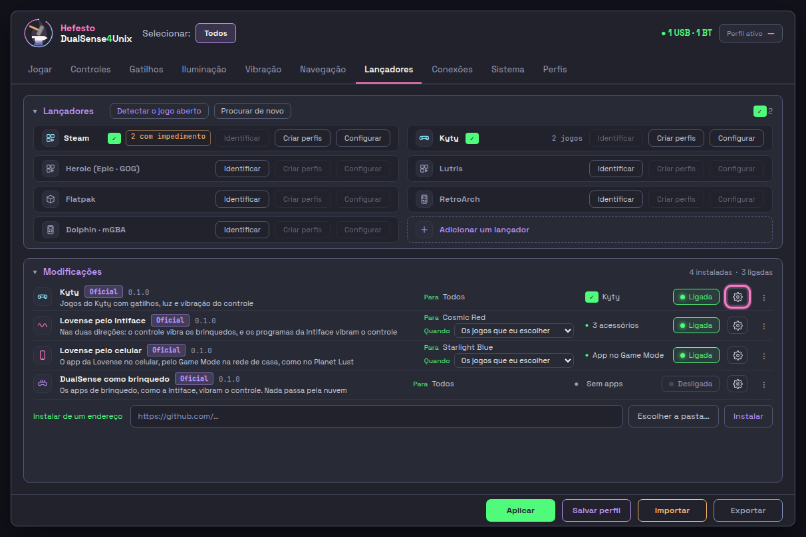
Depois
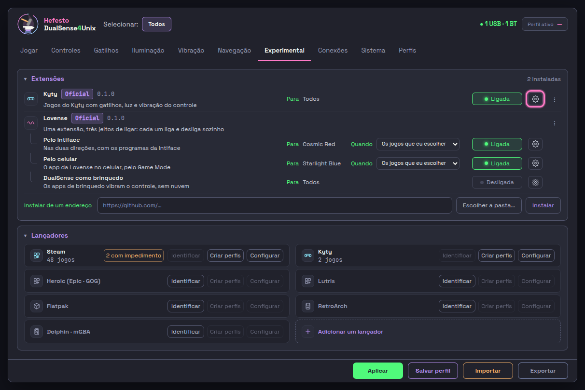
08-14 · Na linha do aparelho de entrada, «Usar como botões de…» abre a janela onde cada tecla dele cai num botão do controle, escolhido sobre o desenho real do DualSense
OS-ACIONADORES-USB-ENTRAM-COMO-BOTOES-DO-CONTROLE-01Você pediu ajuste sem texto: diga o que faltou. Apliquei o que você deu nas outras respostas: larguras iguais, nenhum aviso verde, respiro e nada sufocado.
O que mudou. Na linha do Acionador USB, «Usar como botões de…» e o «Trazer de volta» da linha de baixo ficaram com o mesmo tamanho (150 x 24 px) e na mesma coluna; o botão tinha 22 px de altura. Na janela do acionador, a lista das teclas ganhou respiro (linhas de 40 px, letra de 13 px, botões de 34 px) e a janela ficou um pouco mais larga. Você pediu ajuste sem texto: diga o que faltou.
Antes
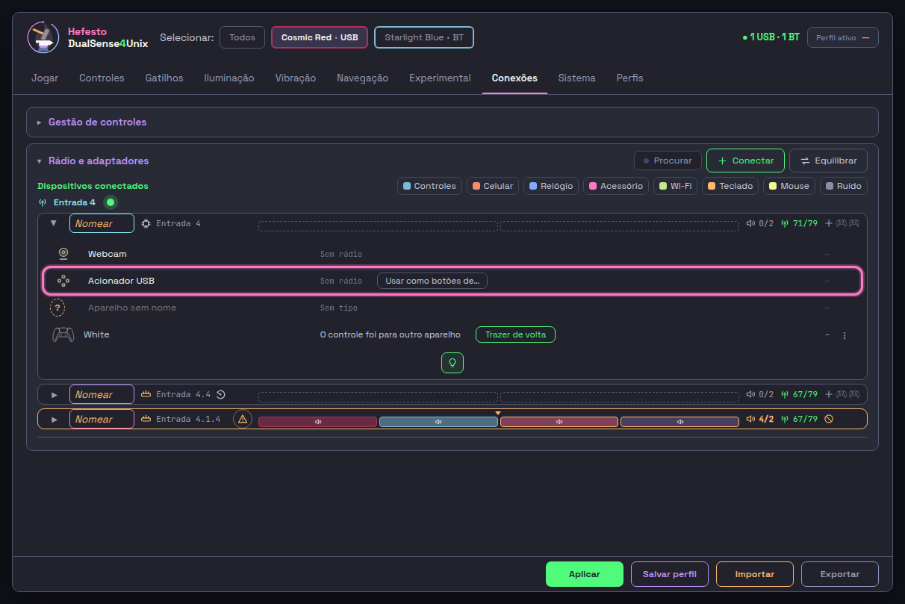
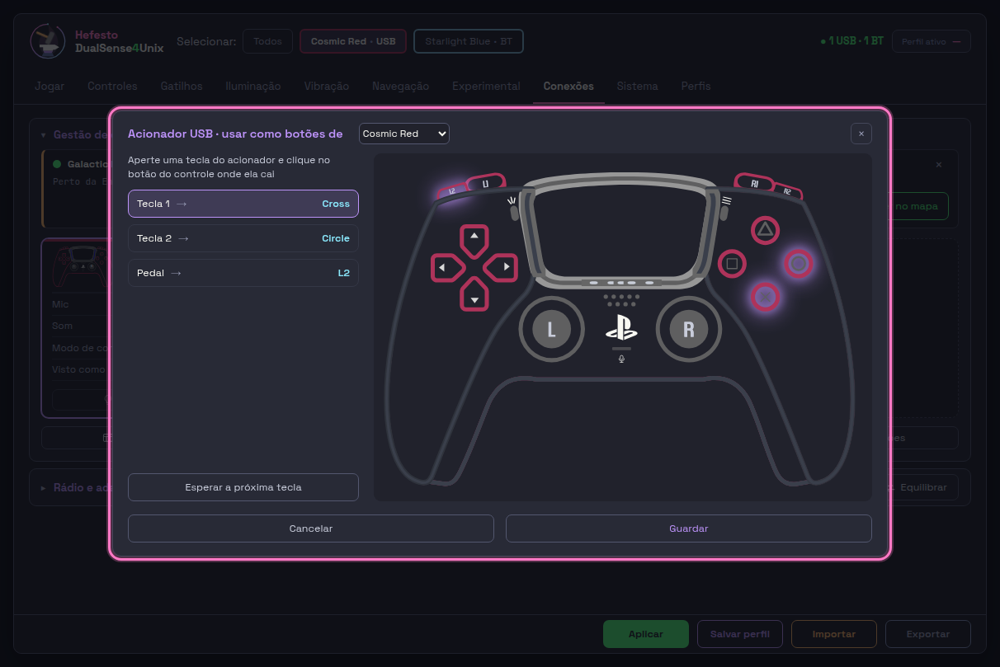
Depois
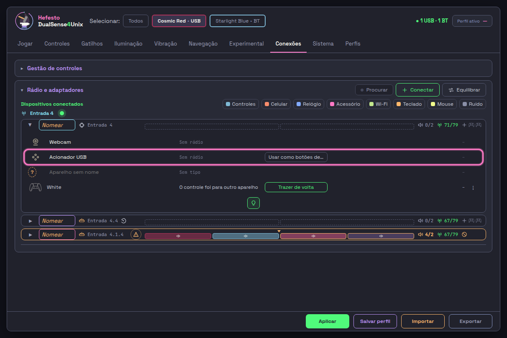
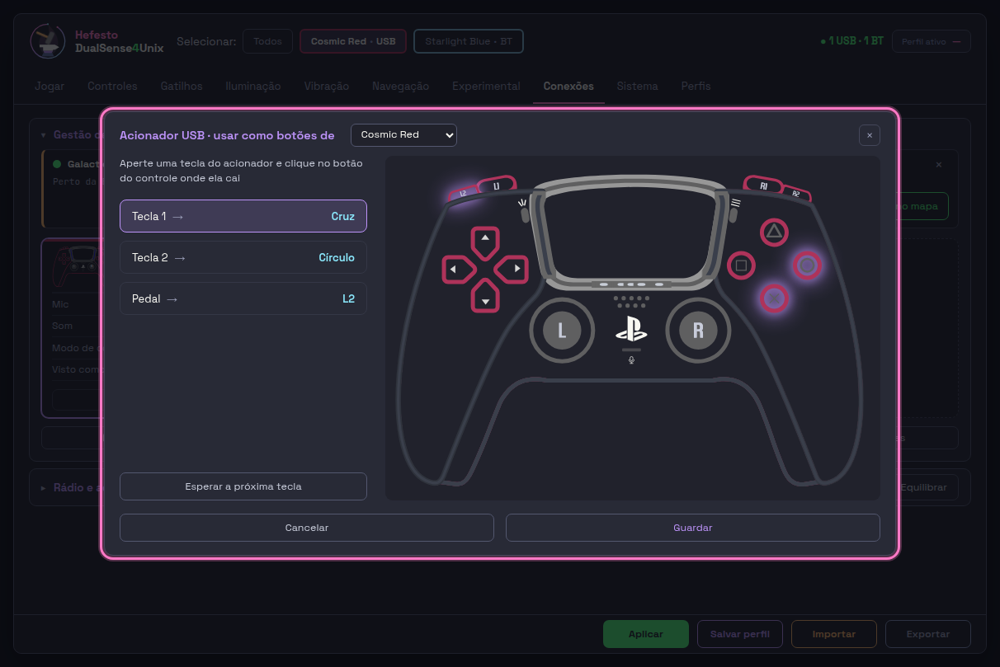
10-19 · O segundo controle mora no perfil do jogo: o controle que joga, mais o segundo controle, e a chave; os botões do segundo somam aos do primeiro, e a vibração vai aos dois
Recusada em 14/10/2026DOIS-CONTROLES-JOGAM-COMO-UM (a sprint caducou com a recusa)«não sei se pedi isso de verdade. Mas recusado a ideia.»
O que mudou. Recusada em 14/10/2026: o segundo controle saiu da página (o campo do Editar e as regras dele). A página volta a ser a da rodada 2, com a tabela dos controles inteira em 740.
Antes
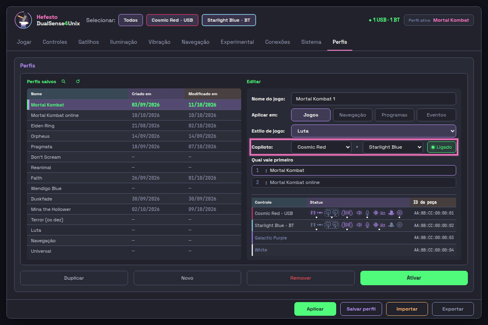
Depois
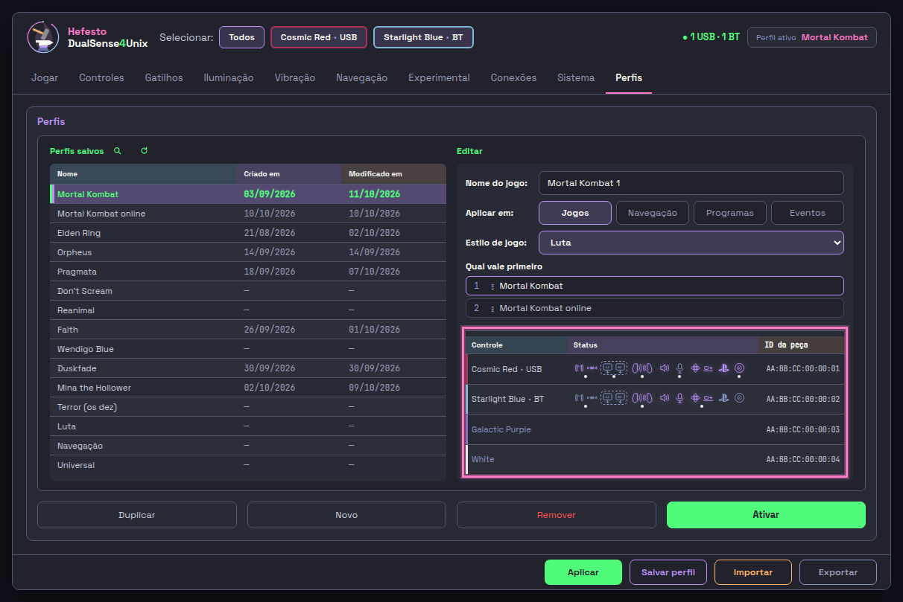